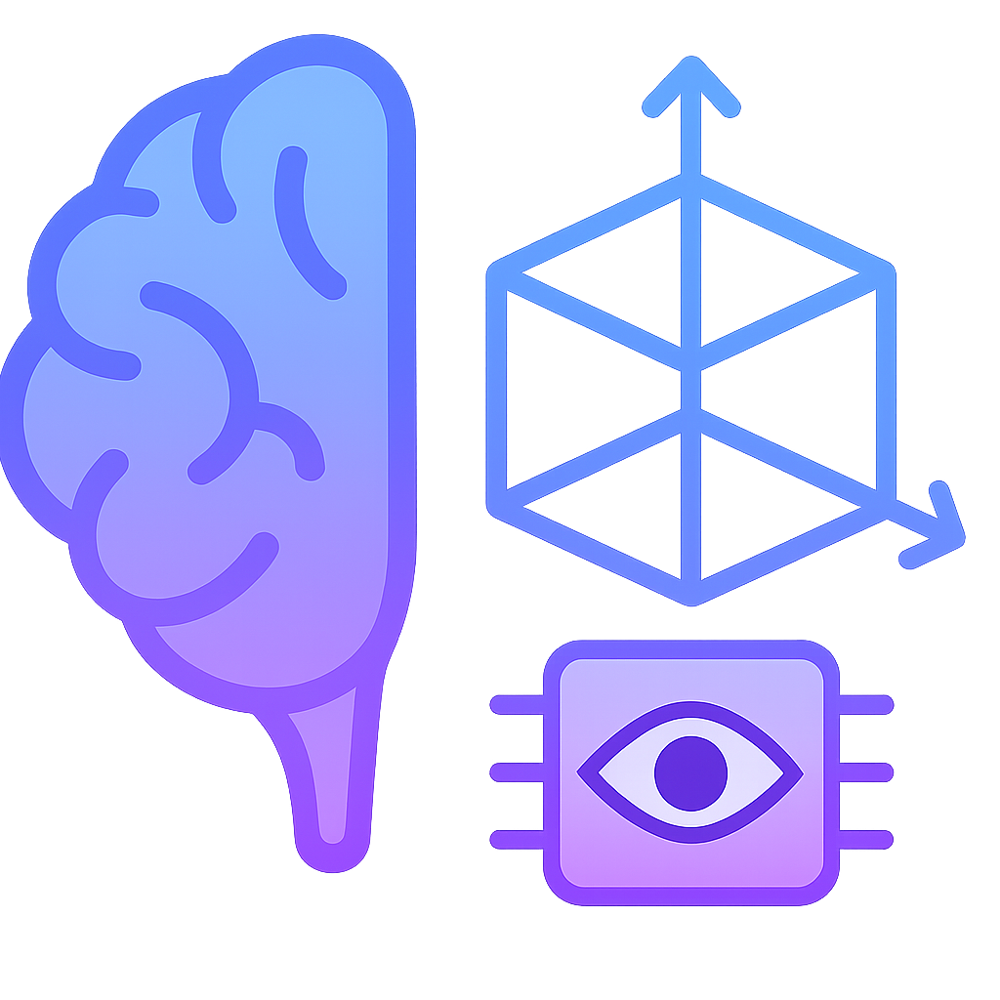
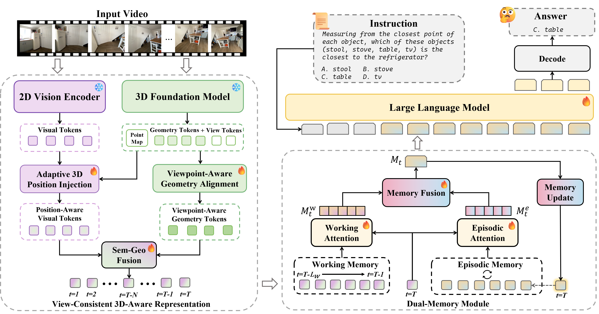
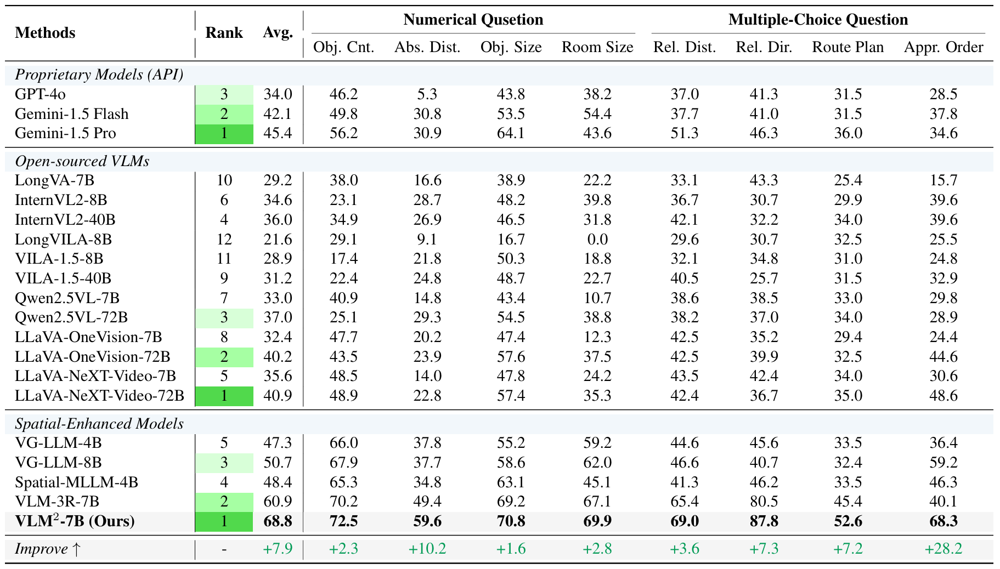
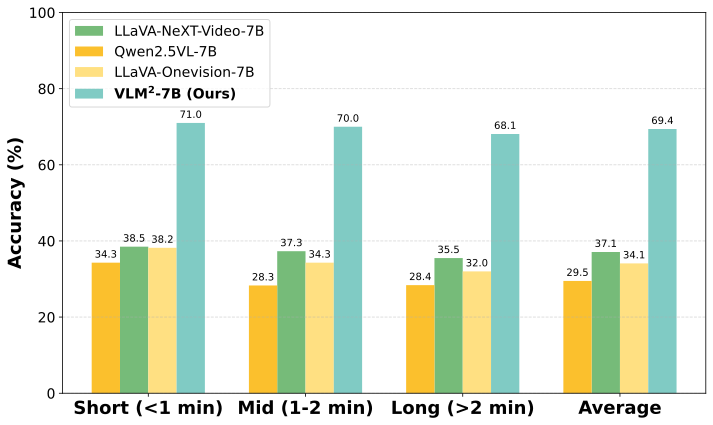
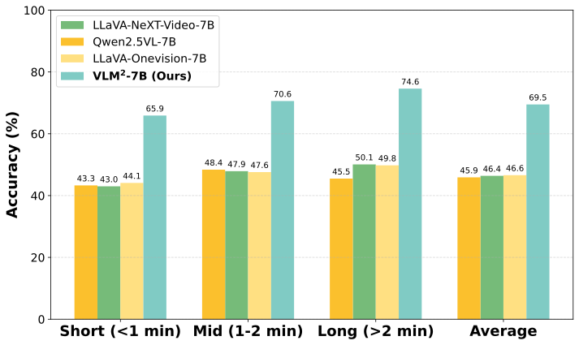

VLM2: Vision-Language Memory for Spatial ReasoningSpatial reasoning is a critical capability for intelligent robots, yet current vision-language models (VLMs) still fall short of human-level performance in video-based spatial reasoning. This gap mainly stems from two challenges: a semantic-geometric misalignment that prevents consistent 3D understanding, and the absence of persistent memory to retain 3D representation and understanding over time. To address these limitations, we present VLM2, a Vision-Language Model with persistent Memory for spatial reasoning with a view-consistent, 3D-aware representation purely from 2D video. Specifically, to enhance long-horizon reasoning, we incorporate a dual-memory module, consisting of a working memory that operates as a sliding window to focus on immediate context, and an episodic memory that consolidates and stores critical long-term information. This design enables efficient and long-horizon spatial reasoning with a fixed computational cost. Extensive experiments on multiple benchmarks show that VLM2 achieves state-of-the-art performance among video-only models, significantly advancing the frontier of visual-spatial intelligence.
VLM2 constructs a view-consistent 3D-aware representation via adaptive 3D position injection, viewpoint-aware geometry alignment and semantic-geometric fusion. A dual-memory module with a sliding-window working memory and a fixed-capacity episodic memory maintains these representations over time, supporting long-horizon spatial reasoning.

Comparison with proprietary models, open-sourced VLMs, and spatial-enhanced models specifically designed for spatial reasoning on the VSI-Bench. Our VLM2 achieves state-of-the-art performance, significantly advancing the frontier of visual-spatial intelligence.

To evaluate the long-horizon spatial reasoning ability of the models, we partition the input videos in VSI-Bench and VSTI-Bench into three groups based on their duration: Short (<1 min), Mid (1-2 min), and Long (>2 min). Across all horizons, our VLM2 maintains consistently superior accuracy on both benchmarks. This demonstrates that our view-consistent 3D-aware representation and dual-memory design effectively preserve spatial understanding over long horizons, highlighting the importance of persistent memory for long-horizon spatial reasoning.


Try answering these spatial reasoning questions using real benchmark videos.
@article{liu2025vlm2,
title={Vision-Language Memory for Spatial Reasoning},
author={Liu, Zuntao and Du, Yi and Fu, Taimeng and Su, Shaoshu and Ho, Cherie and Wang, Chen},
booktitle={arXiv preprint arxiv:2511.20644},
year={2025}
}